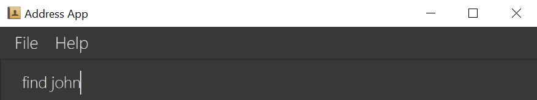
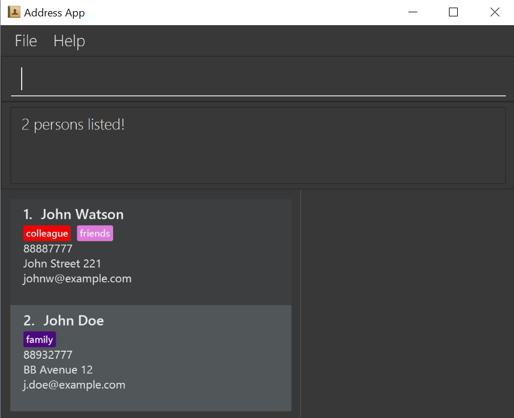
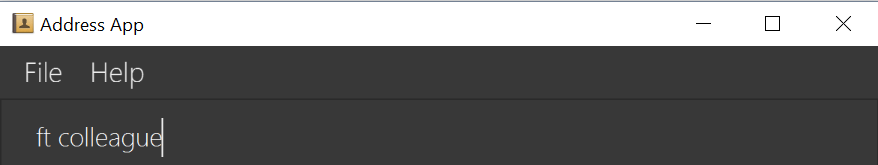
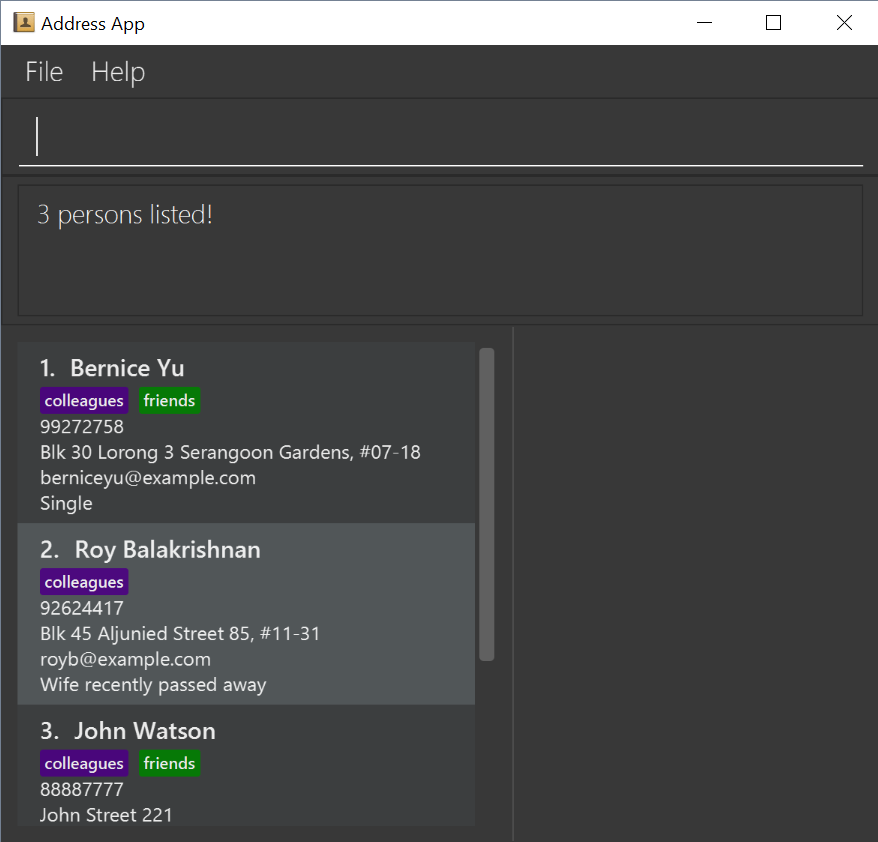
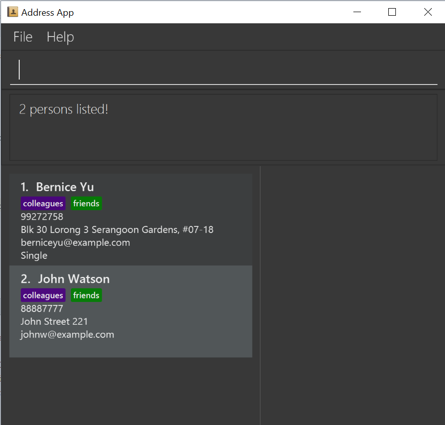

By: Team W13-B3 Since: Jun 2016 Licence: MIT
- 1. Product Overview
- 2. Quick Start
- 3. Features
- 3.1. Viewing help :
help - 3.2. Adding a person:
add - 3.3. Listing all persons :
list - 3.4. Deleting a person :
delete - 3.5. Editing a person :
edit - 3.6. Adding a tag to a person :
addtag - 3.7. Deleting a tag :
deletetag - 3.8. Locating persons by name:
find - 3.9. Locating persons by tags:
filter - 3.10. Selecting a person :
select - 3.11. Making a note:
note - 3.12. Creating a backup :
backup - 3.13. Restoring a backup :
restore - 3.14. Synchronising with Google Contacts :
sync - 3.15. Listing entered commands :
history - 3.16. Undoing previous command :
undo - 3.17. Redoing the previously undone command :
redo - 3.18. Clearing all entries :
clear - 3.19. Resizing the main window :
resize - 3.20. Exiting the program :
exit - 3.21. Saving the data
- 3.1. Viewing help :
- 4. Since v1.2
- 5. Coming in v2.0
- 6. FAQ
- 7. Command Summary
1. Product Overview
Product Name: DummyName
Version: 1.5
DummyName is a free desktop contact management application that helps you manage your large collection of contacts conveniently and keep track of your appointments. You can store contacts as well as other information and retrieve them efficiently with the help of DummyName.
DummyName is available for the Linux, Unix, Windows 10, and Mac OS X operating systems.
2. Quick Start
-
Ensure you have Java version
1.8.0_60or later installed in your Computer.Having any Java 8 version is not enough.
This app will not work with earlier versions of Java 8. -
Download the latest
addressbook.jarhere. -
Copy the file to the folder you want to use as the home folder for your Address Book.
-
Double-click the file to start the app. The GUI should appear in a few seconds.

-
Type the command in the command box and press Enter to execute it.
e.g. typinghelpand pressing Enter will open the help window. -
Some example commands you can try:
-
list: lists all contacts -
addn/John Doe p/98765432 e/johnd@example.com a/John street, block 123, #01-01: adds a contact namedJohn Doeto the Address Book. -
delete3: deletes the 3rd contact shown in the current list -
exit: exits the app
-
-
Refer to the Features section below for details of each command.
3. Features
Command Format
-
Command can be substituted with shorthand alias.
-
Words in
UPPER_CASEare the parameters to be supplied by the user e.g. inadd n/NAME,NAMEis a parameter which can be used asadd n/John Doe. -
Items in square brackets are optional e.g
n/NAME [t/TAG]can be used asn/John Doe t/friendor asn/John Doe. -
Items with
… after them can be used multiple times including zero times e.g.[t/TAG]…can be used ast/friend,t/friend t/familyetc.
3.1. Viewing help : help
Command Name: help
Shorthand Alias: hp
Function: displays the User Guide
Format: help
If you want to view the User Guide:
-
Type in
>> help

Figure 3.1.1 -
Press
Enterand a User Guide document would show up.
3.2. Adding a person: add
Command Name: add
Shorthand Alias: a
Function: adds a person to DummyName
Format: add n/NAME p/PHONE_NUMBER e/EMAIL a/ADDRESS [t/TAG]…
| A person can have any number of tags (including 0) |
Parameters can be in any order e.g. n/NAME p/PHONE_NUMBER, p/PHONE_NUMBER n/NAME are equivalent.
|
If you want to add a new contact to your DummyName:
-
Type in
>> add n/Betsy Crowe t/friend e/betsycrowe@example.com a/Newgate Prison p/1234567 t/criminal. -
Press
Enterand you should see:
Here are some other ways you can add contacts:
-
add n/John Doe p/98765432 e/johnd@example.com a/John street, block 123, #01-01 -
add n/Betsy Crowe t/friend e/betsycrowe@example.com a/Newgate Prison p/1234567 t/criminal -
a n/John Watson p/83331122 e/johnw@example.com a/John Avenue, block 2, #01-01
If you type in all commands shown above, you should see:
3.3. Listing all persons : list
Shorthand Alias: l
Shows a list of all persons in the address book.
Format: list
3.4. Deleting a person : delete
Shorthand Alias: d
Deletes the specified person from the address book.
Format: delete INDEX
Examples:
-
list
delete 2
Deletes the 2nd person in the address book. -
find Betsy
delete 1
Deletes the 1st person in the results of thefindcommand. -
list
d 4
Deletes the 4th person in the address book.
3.5. Editing a person : edit
Shorthand Alias: e
Edits an existing person in the address book.
Format: edit INDEX [n/NAME] [p/PHONE] [e/EMAIL] [a/ADDRESS] [t/TAG]…
Examples:
-
edit 1 p/91234567 e/johndoe@example.com
Edits the phone number and email address of the 1st person to be91234567andjohndoe@example.comrespectively. -
edit 2 n/Betsy Crower t/
Edits the name of the 2nd person to beBetsy Crowerand clears all existing tags. -
e 3 n/Carl Cooper
Edits the name of the 3rd person to beCarl Cooper.
3.6. Adding a tag to a person : addtag
Shorthand Alias: at
Adds a tag to an existing person in the address book.
Format: addtag INDEX TAG
Examples:
-
addtag 1 friends
Adds thefriendstag to the 1st person. -
at 2 9pmclass
Adds the9pmclasstag to the 2nd person.
3.7. Deleting a tag : deletetag
Shorthand Alias: dt
Deletes the specified tag from the address book.
Format: deletetag TAGNAME
Examples:
-
deletetag buddy
Deletes the tagbuddyfrom all contacts in the address book. -
dt class2101
Deletes the tagclass2101from all contacts in the address book.
3.8. Locating persons by name: find
Command Name: find
Shorthand Alias: f
Function : finds persons whose names contain any of the given keywords.
Format: find KEYWORD [MORE_KEYWORDS]
If you want to find a person named John Watson:
-
Type in
>> find john

Figure 3.8.1 -
Press
Enterand you should see a list of persons having the namejohn:

Figure 3.8.2
Here are some other ways you can do with find:
-
find Betsy Tim John
Lists any person having namesBetsy,Tim, orJohn -
f Watson
Lists any person having the nameWatson
3.9. Locating persons by tags: filter
Command Name: filter
Shorthand Alias: ft
Function: finds persons who are tagged with any of the given tags from the existing list of persons.
Format: filter TAG [MORE_TAGS]
If you want to find your friends among all your colleagues:
-
Type in
>> filter colleagues

Figure 3.9.1 -
Press
Enterand you will see a list of persons who are tagged withcolleagues

Figure 3.9.2 -
Type in
>> filter friends
Figure 3.9.3 -
Press
Enterand you will see a list of persons who are tagged with bothfriendsandcolleagues

Figure 3.9.4
Here are some other ways you can do with filter:
-
filter family
Lists any person having thefamilytag -
filter family friends
Lists any person tagged withfamilyorfriends
3.10. Selecting a person : select
Shorthand Alias: sl
Selects the person identified by the index number used in the last person listing.
Format: select INDEX
Examples:
-
list
select 2
Selects the 2nd person in the address book. -
find Betsy
select 1
Selects the 1st person in the results of thefindcommand. -
list
s 7
Selects the 7th person in the address book.
3.11. Making a note: note
Shorthand Alias: 'n'
Makes a note for an existing person in the address book.
Format: note INDEX [n/Note]
Examples:
-
note 1 n/This is an important noteAdds or replace the existing note for the 1st person to beThis is an important note -
edit 2 n/Removes all existing notes from the 2nd person -
e 3 n/Removes all existing notes from the 3rd person
3.12. Creating a backup : backup
Shorthand Alias: b
Creates a backup file to store the data in address book.
Format: backup
3.13. Restoring a backup : restore
Shorthand Alias: rb
Retrieves data from a backup file and store it in address book.
Format: restore
3.14. Synchronising with Google Contacts : sync
Shorthand Alias: sy
Authenticates and communicates with Google Contacts via the People API to synchronise contacts
Format: sync
3.15. Listing entered commands : history
Command Name: history
Shorthand Alias: hx
Function: lists all the commands that you have entered in reverse chronological order.
Format: history
| Pressing the ↑ and ↓ arrows will display the previous and next input respectively in the command box. |
If you want to view the list of commands entered:
-
Type in
>> history

Figure 3.15.1 -
Press
Enterand the lists of commands that you entered before would show up.
3.16. Undoing previous command : undo
Shorthand Alias: u
Restores the address book to the state before the previous undoable command was executed.
Format: undo
|
Undoable commands: those commands that modify the address book’s content ( |
Examples:
-
delete 1
list
undo(reverses thedelete 1command) -
select 1
list
undo
Theundocommand fails as there are no undoable commands executed previously. -
delete 1
clear
u(reverses theclearcommand)
undo(reverses thedelete 1command)
3.17. Redoing the previously undone command : redo
Shorthand Alias: r
Reverses the most recent undo command.
Format: redo
Examples:
-
delete 1
undo(reverses thedelete 1command)
redo(reapplies thedelete 1command) -
delete 1
redo
Theredocommand fails as there are noundocommands executed previously. -
delete 1
clear
undo(reverses theclearcommand)
undo(reverses thedelete 1command)
r(reapplies thedelete 1command)
redo(reapplies theclearcommand)
3.18. Clearing all entries : clear
Shorthand Alias: c
Clears all entries from the address book.
Format: clear
3.19. Resizing the main window : resize
Command Name: resize
Shorthand Alias: rs
Function: resizes the main window to the specified width and height in pixels
Format: resize WIDTH HEIGHT
Restriction on WIDTH and HEIGHT: WIDTH < = width of the screen display, HEIGHT < = height of the screen display
|
You CANNOT undo a resize command
|
If you want to resize your main window to 1280 * 720:
-
Type in
>> resize 1280 720

Figure 3.19.1 -
Press
Enterand the main window would be resized to 1280 * 720.
3.20. Exiting the program : exit
Shorthand Alias: q
Exits the program.
Format: exit
3.21. Saving the data
Address book data are saved in the hard disk automatically after any command that changes the data.
There is no need to save manually.
4. Since v1.2
-
Adding and deleting of tags
-
Resize window size
-
Restore to a AddressBook backup
-
Synchronise with Google Contacts
5. Coming in v2.0
-
Add tags cumulatively
-
Add a person without all his/her parameters
-
Hide private contact details
-
Access a contact’s Facebook profile
-
Get direction to a contact’s address
-
Upload pictures
-
Clear command to reset application to starting state
-
Theme and plugin manager
-
Encrypt private information
-
Add and view Favourites
-
Email contacts directly in AddressBook
-
Use regex in
findcommand
6. FAQ
Q: How do I transfer my data to another Computer?
A: Install the app in the other computer and overwrite the empty data file it creates with the file that contains the data of your previous Address Book folder.
7. Command Summary
-
Add
add n/NAME p/PHONE_NUMBER e/EMAIL a/ADDRESS [t/TAG]…
e.g.add n/James Ho p/22224444 e/jamesho@example.com a/123, Clementi Rd, 1234665 t/friend t/colleague -
Clear :
clear -
Delete :
delete INDEX
e.g.delete 3 -
Edit :
edit INDEX [n/NAME] [p/PHONE_NUMBER] [e/EMAIL] [a/ADDRESS] [t/TAG]…
e.g.edit 2 n/James Lee e/jameslee@example.com -
Find :
find KEYWORD [MORE_KEYWORDS]
e.g.find James Jake -
List :
list -
Help :
help -
Select :
select INDEX
e.g.select 2 -
History :
history -
Undo :
undo -
Redo :
redo -
Note :
note 2 n\Have a scheduled meeting on Wed, 11 Oct 2017